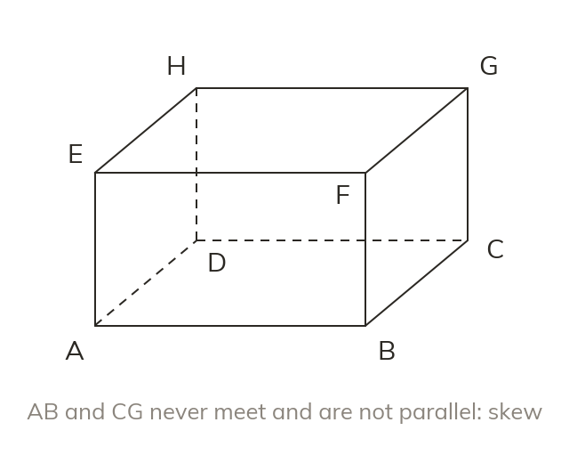
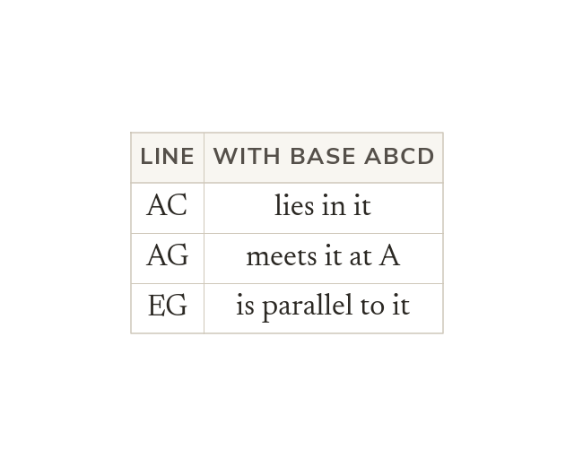
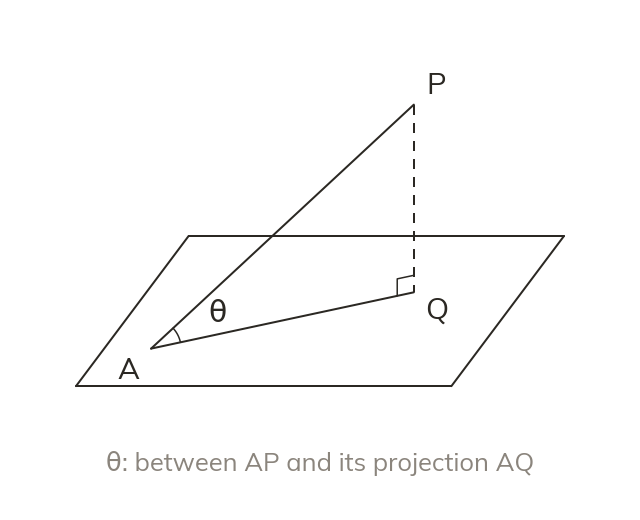
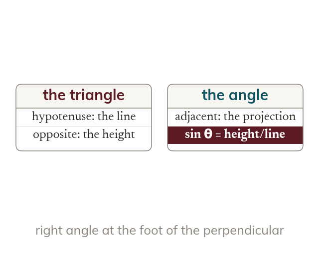

Three ways
Two lines in 3D meet, are parallel, or are skew. Skew lines never meet and are not parallel.
In three dimensions two lines can miss each other without being parallel, and the angle a line makes with a plane has to be built before it can be measured. Both ideas turn a solid back into triangles.
Work down the page at your own pace. Write every answer in your book first, then click to check it.
Read each card, then follow the worked examples one step at a time.

Two lines in 3D meet, are parallel, or are skew. Skew lines never meet and are not parallel.

A line lies in a plane, meets it once, or is parallel to it. Extending a line shows whether it meets the plane.
Pick an answer. If it's wrong, the feedback tells you which mistake it was.
Section 7.6 Lines and planes in three dimensions (p196-207): the pages that classify two lines and a line and a plane.
Read each card, then follow the worked examples one step at a time.

The angle between a line and a plane is measured to its projection. The projection is the line's shadow, straight down onto the plane.

The line, its projection and the perpendicular make a right-angled triangle. The angle then comes from trigonometry.
Pick an answer. If it's wrong, the feedback tells you which mistake it was.
Exercise 7E (p196-207): the questions finding the angle between a line and a plane in cuboids, pyramids and wedges. Leave the angle between two planes: it is not in this lesson's LOs.
Finished? Next lesson: 8.1-8.2-8.3 Introducing Differentiation.
Log in, then search for a code to practise that skill.